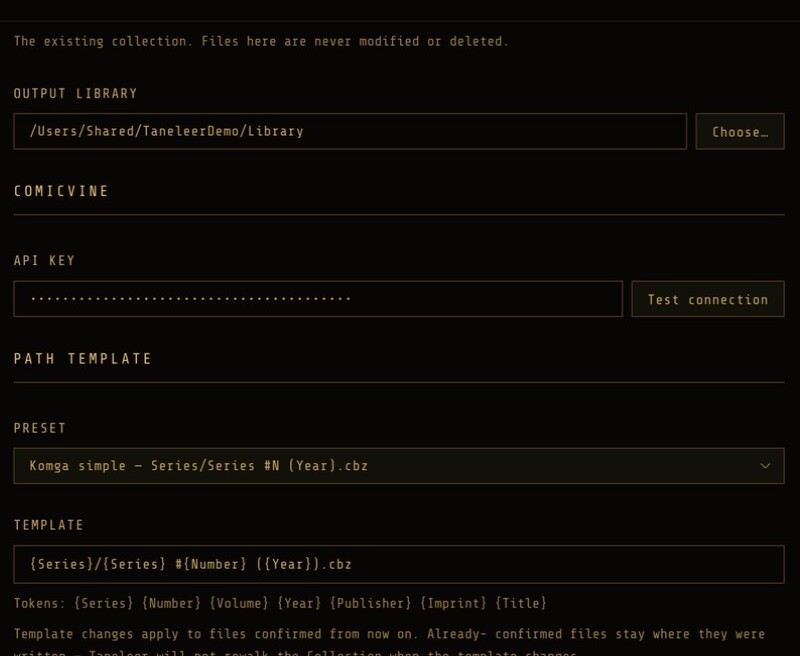
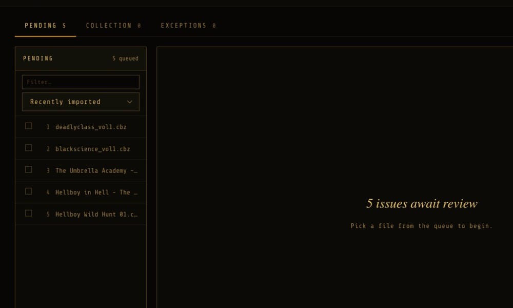
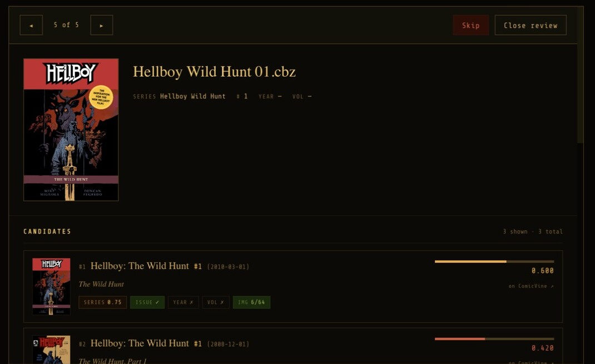
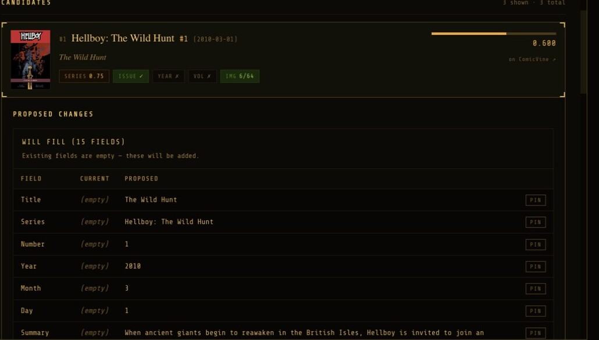
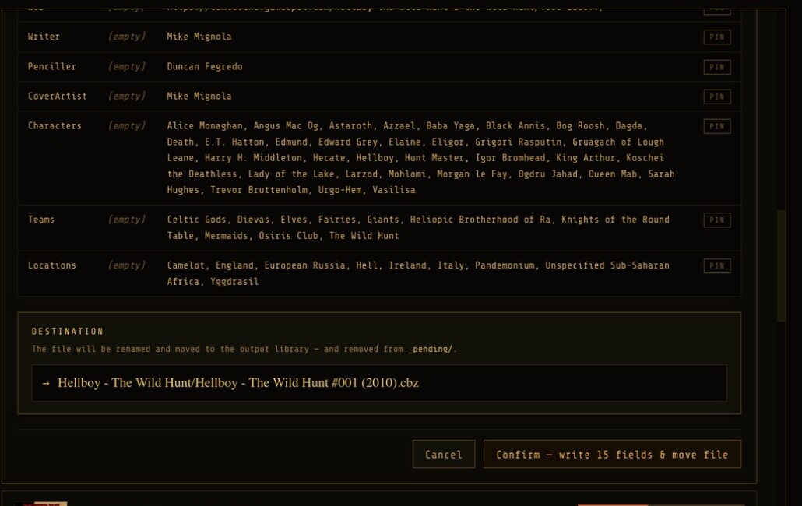
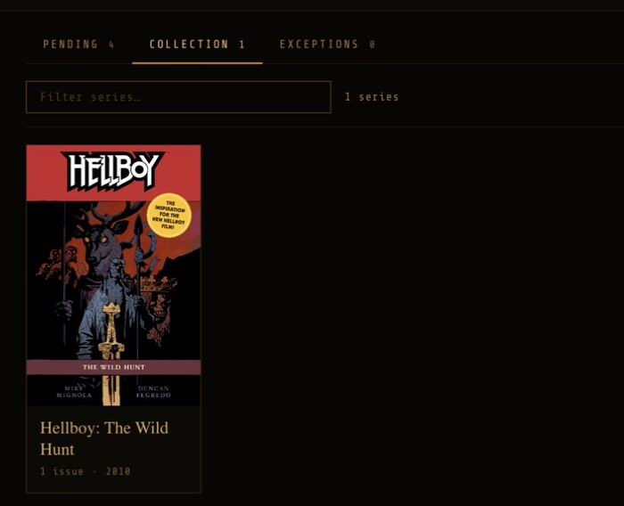

Guide
How to use Taneleer
From a folder of unsorted files to a collection Komga can read.
Install
Download the DMG, open it, and drag Taneleer into your Applications folder. The build is signed and notarised, so it opens without warnings. Taneleer requires macOS 11 or later and updates itself when a new version is released.
Set up
First launch runs a short setup. You will be asked for:
- Source library
- The folder holding your existing comics. Read-only.
- Output library
- Where Taneleer writes finished files. Point Komga here.
- ComicVine API key
- Free from comicvine.gamespot.com/api. Stored locally.
- Path template
- How output files are named and foldered. The default, Komga simple, suits most.
Keep source and output separate. They may be the same folder once you trust the result, but Settings will warn you.

Scan the source library
Press Scan source. Taneleer walks the source folder and, for each new or changed file, converts it to CBZ and places it in the pending queue. Files appear in the Pending tab as they are processed, and a status line shows progress.
CBR and PDF files are converted on entry; CBZ files are copied. A file that cannot be read goes to the Exceptions tab with a reason.

Review a file
Select a file in the Pending list. The review panel shows its cover, the series, issue, year and volume parsed from the filename, and a ranked list of ComicVine candidates.
Each candidate carries a score and a breakdown:
- SERIES
- How closely the series name matches.
- ISSUE
- Whether the issue number matches exactly.
- YEAR
- Whether the year is within one of the cover date.
- VOL
- Whether the volume matches.
- IMG
- Cover similarity, from a visual fingerprint. A boost, never a gate: variant covers are common.
The score is weighted: series name 40%, issue number 25%, cover 20%, year 15%. How the matching works.
Use ← and → to step through the queue. If no candidate is right, re-search with a different series, issue or year.

Compare and confirm
Click a candidate to open its comparison. Fields are divided in two:
- Will fill — the file had nothing there. Always applied.
- Existing fields differ — the file already had a value. Each has a checkbox, all ticked by default. Untick any you wish to keep.
The Confirm button states exactly how many fields it will change. Confirm, and the file is written to the output library at its template path, then the next file opens. Use Skip to defer a file instead.


The collection and exceptions
The tab counts show where every file went. Confirming moves one from Pending to Collection; the numbers change together.
- Collection — confirmed issues, newest first. Open a file or re-enrich it.
- Exceptions — files that could not be read (Compromised) and files you skipped. Each can be re-imported, and a skipped file can be moved back to Pending.

Re-enrich later
Right-click an issue in the Collection and choose re-enrich to review it against ComicVine again. The row turns amber while under examination. Confirm to apply changes, or cancel and nothing is altered. Re-enrichment is never automatic.
Going further
- Auto-apply
- Settings: Manual (default), Assisted or Aggressive, with a score threshold. Only files with no existing metadata can be applied automatically.
- Series aliases
- Teach Taneleer that
seventoeternitymeans Seven To Eternity, by prefix or regex, with a live test field. - Duplicates
- Covers are fingerprinted to flag visual duplicates. The threshold is adjustable.
- Watch mode
- Optionally rescan the source library automatically when files change.
- Komga
- Enter your Komga URL, credentials and library ID; a scan fires after each confirmation.
- Statistics
- Totals and top publishers, series and years, from Settings.
Press ⌘/ in the app for keyboard shortcuts.
Questions
Will Taneleer change my original files?
No. The source library is read-only. All output is written to the output library.
ComicVine says the rate limit is reached.
ComicVine allows about 200 requests an hour. Taneleer pauses, shows a countdown, and resumes by itself. Work already done is kept.
A file shows as Compromised.
It could not be read or converted. The Exceptions tab gives the reason. Open the source, repair or replace it, then choose Re-import.
Can I delete a file from the collection in Taneleer?
Not directly. The source library is the source of truth; remove the file there. In bulk, you can retire rows from the Collection while leaving output files in place.
Taneleer is free. Can I support it?
Yes, optionally, through Ko-fi. Nothing is locked behind it.
Is there a Windows version?
Not at v1. A portable build is planned after release.